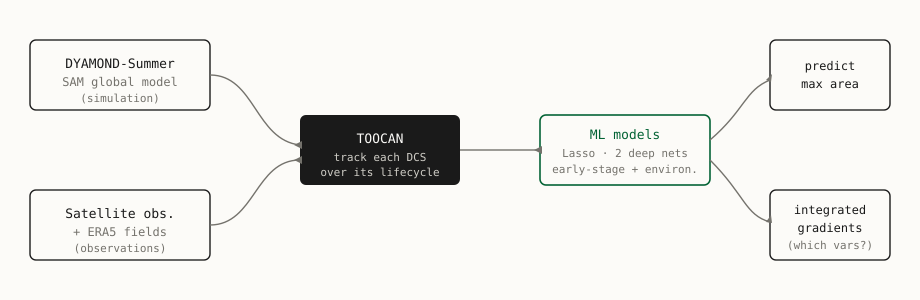
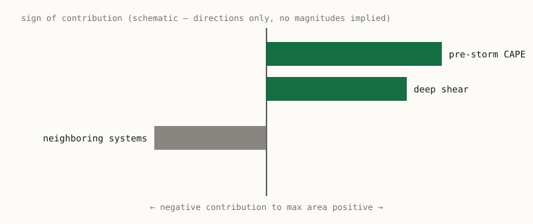

Physical mechanisms of deep convective system maximum area in a hierarchy of datasets
Deep convective systems (DCSs) are central to the tropical hydrological cycle and radiative budget, and the largest, longest-lived systems contribute a high fraction of tropical extreme precipitation. Building on a method that predicts the maximum area of DCSs from their early-stage and environmental characteristics, we test whether this approach transfers from cloud-resolving simulation (the DYAMOND-Summer SAM run) to observations (DCS tracks from satellite data combined with ERA5 fields), using TOOCAN to track systems and both Lasso regression and deep neural networks to predict size. With integrated gradients as an explainable-AI probe, we find good predictivity for the non-linear models across both datasets and robust feature importance: pre-storm environmental CAPE and deep shear contribute positively to a large maximum area, while the presence of neighboring systems is a leading negative contributor. Observational composites corroborate the ML signal — pre-storm CAPE is significantly higher than average for the largest systems.
Why the largest storms
Deep convective systems are central to the tropical hydrological cycle and the radiative budget, and the largest and longest-lived of these cloud systems contribute a high fraction of extreme precipitation in the Tropics (Fiolleau and Roca 2024). Understanding what drives such systems is therefore important, and a natural target is their maximum area: how large a system ultimately becomes over its lifecycle.
This work follows a method introduced by Abramian et al. (2025) that predicts the maximum area of DCSs from information available early in a system’s life (Abramian et al. 2025). That method was developed on the DYAMOND-Summer simulation with the cloud-resolving global model SAM, with the TOOCAN algorithm used to track cloud systems through time. The central question here is whether the same approach transfers to observations.
A hierarchy of datasets
The study spans a hierarchy from simulation to observation, tracked consistently with TOOCAN and supplied with physical variables from a reanalysis for the observational arm.
TOOCAN (Tracking Of Organized Convection Algorithm using a 3-D segmentatioN) follows each deep convective system through its lifecycle from geostationary infrared imagery (Fiolleau and Roca 2024). ERA5 is the ECMWF global reanalysis used here for the physical (dynamical and thermodynamical) variables in the observational dataset (Hersbach et al. 2020).
- Simulation — the DYAMOND-Summer run of the global cloud-resolving model SAM, with DCSs tracked by TOOCAN, as in the original method (Abramian et al. 2025).
- Observations — DCS tracks identified by TOOCAN in satellite data (Fiolleau and Roca 2024), combined with ERA5 (Hersbach et al. 2020) for the physical variables.
On each dataset, the predictors are built from the early stage of the systems and their surrounding environment — dynamical and thermodynamical variables, morphological features of the systems, and the characteristics of their neighbors. Three models are fit per dataset: a Lasso linear regression and two different deep neural networks (Figure 1).

To ask which physical variables constrain the maximum area the most, the study uses an explainable-AI method — integrated gradients (Sundararajan et al. 2017) — to assess which variables contribute most to a model’s prediction.
What predicts a large system
Two findings stand out from the abstract. First, the non-linear models achieve good predictivity across both datasets, not just in simulation. Second, the feature-importance results are robust, and they point the same way in both settings (Figure 2):
- Pre-storm environmental CAPE plays a pivotal positive role in reaching a large maximum area.
- Deep shear likewise contributes positively.
- The presence of neighboring systems is one of the main negative contributors.

Finally, the ML signal is cross-checked against the data directly: composites of the most important variables in the observational dataset confirm the pattern — the pre-storm CAPE composite shows significantly higher than average values for the largest systems.
Takeaway
A predictor of deep-convective-system maximum area, originally built on cloud-resolving simulation, carries over to observations: simple ML models trained on early-stage and environmental features predict size well in both regimes, and an explainable-AI analysis gives a consistent, physically interpretable story — high pre-storm CAPE and deep shear favor large systems, while crowding by neighboring systems works against them. Full references appear in the margin and are collected below.
Citation
@inproceedings{polesello2026,
author = {Polesello, Andrea and Casallas, Alejandro and Muller,
Caroline and Roca, Rémy and Locatello, Francesco},
title = {Physical Mechanisms of Deep Convective System Maximum Area in
a Hierarchy of Datasets},
booktitle = {EGU General Assembly 2026},
date = {2026-05-05},
doi = {10.5194/egusphere-egu26-17091}
}